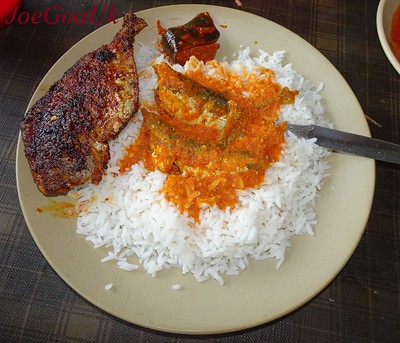

Fish Curry
What is Fish Curry?
Fish Curry is Staple in a lot of Asian Countries and is made in various ways using different locallyavailabel ingredients like coconut ,poppy seeds, tamarind etc.
Ingredients
- 3 tablespoons canola oil, divided
- 2 teaspoons Dijon mustard
- 1 teaspoon ground black pepper
- ¼ cup chopped fresh cilantro
- ¼ cup vegetable broth
- ½ cup chopped tomato
- ½ teaspoon ground turmeric
- 1 teaspoon white sugar
- 1 teaspoon ground coriander
- 1 teaspoon ground cumin
- 2 teaspoons cayenne pepper, or to taste
- 5 cashew halves
- 1 (1 inch) piece fresh ginger root, peeled and chopped
- 4 cloves garlic, roughly chopped
- 1 medium onion, coarsely chopped
- 4 white fish fillets
- 1 ½ teaspoons salt, divided